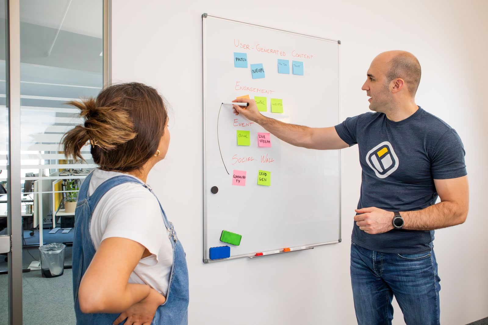

About · The short version
Twelve years of backend systems
before the first contract
I started in 2011 building payment backends, and spent a decade learning distributed systems the expensive way: the race condition that only fires on holidays, the migration that could not be rolled back, the integration whose documentation described a system that no longer existed. A master’s in computer science from a Swedish technical university gave me the theory; production gave me the suspicion of undocumented behaviour that this work runs on.
The first smart contract I read closely, in 2019, was a friend’s token contract. I found it wanting — and found the work interesting, because a contract is a backend system with two unusual properties: it is public, and it cannot be patched quietly. Every habit I had — spec first, distrust the happy path, write it down — turned out to be worth more here than where I learned it.
I have been independent since 2022, working from Gothenburg with clients in nine countries, in English, in writing, async-first. I take one review slot at a time. The slowness is the product: a review is reading, and reading does not parallelise.
Method · How an engagement runs
Six rules, in the order I apply them
-
Spec before code
If the intended behaviour is not written down, the review has nothing to check the code against. No spec, no engagement — I will help you write one, as phase 01.
-
Standard patterns, named
Checks-effects-interactions on value-moving functions. Pull payments over push. Least-privilege roles. These have names because they are known answers; novelty in a contract is a cost, not a feature.
-
Tests that can fail
Property tests on the invariants in the spec, fuzzing on the maths, and a coverage floor of 95% on in-scope contracts. A test suite that has never failed is decoration.
-
Independent eyes on my own code
Code I write is reviewed by a peer reviewer I commission and pay out of my fee, named to the client. Reviewing your own work is how flaws survive to launch — see Case file 01, which was someone else’s code and nearly everyone’s story.
-
Testnet and fork rehearsal before mainnet
Deployment is rehearsed against live chain state and executed from the rehearsed script. Constructor arguments are diffed, not remembered.
-
Findings in writing, answered in writing
Every finding is severity-rated with impact and likelihood stated separately, and every one gets a written response — fixed, accepted, or disputed with reasons. The report is the deliverable; the call is just the summary.

Limits · The honesty page
What a review is not
Four sentences I say in every first call, printed here so you can hold me to them.
Not a guarantee
Reviewed and audited code has failed in public before, and will again. A review reduces risk; it does not delete it. Anyone who tells you otherwise is selling something, and it is probably a token.
Not an endorsement
My report describes code. It says nothing about the worth of a project, a team or a token. My terms forbid using my name or my report in token marketing, and I will say so publicly if it happens.
Not investment advice
I never comment on whether a token is worth buying, and nothing on this site should be read that way. Most tokens go to zero. The honest prior is that any given one will too.
Not permanent protection
Immutability cuts both ways: a deployed contract cannot be patched quietly when the world changes. That is why the specification and the review happen before deployment — afterwards, your options are migration and apology.
Terms · The practice, on paper
Figures and engagement terms
The practice’s own figures for the last two years, and the terms every engagement runs under. Both are the kind of thing I would want to read before hiring me.
- Reviews delivered, 2024–25
- 23 — median 11 findings per review, 261 findings in total, every one answered in writing
- Development engagements, 2024–25
- 9 contract systems, spec to deploy; 6 gas optimisation passes
- Launches I advised delaying
- 4 — in 3 cases the client delayed, fixed and shipped; the fourth is a longer story I tell on the call, not here
- Fee basis
- Written scope and fixed fee before work starts; 40% on booking for reviews, balance on delivery of the report
- Deliverables
- Report as PDF plus a machine-readable findings file; one re-review of fixes included in every review fee
- Confidentiality
- Client code and findings are never published, quoted or reused by me; case files here are anonymised with permission
- Conflicts
- I do not take a second engagement on a direct fork of a current client’s system, and I disclose past work in the same protocol family
- Keys & custody
- I never hold client keys, funds or admin roles — at deployment, admin rights transfer to the client against a signed checklist
Sound like a fit?
Tell me what the contracts do, how many lines they run to, and when you plan to ship. Replies within two working days.